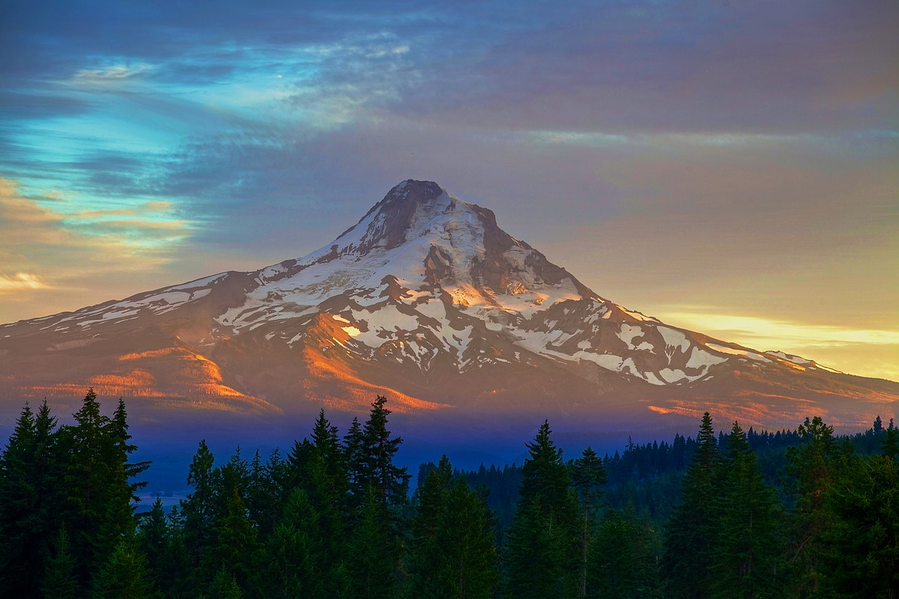

| City |
Founded |
Region

|
Population |
Urbanicity |
Affluence |
| Portland |
1845 |
Willamette Valley |
630,498 |
Urban |
Above Average |
| Salem |
1842 |
Willamette Valley |
177,432 |
Urban |
Average |
| Bend |
1904 |
Central Oregon |
104,557 |
Mixed |
Above Average |
| Lake Oswego |
1847 |
Willamette Valley |
39,924 |
Suburban |
High |
| Klamath Falls |
1867 |
Southern Oregon |
21,888 |
Rural |
Below Average |
| Pendleton |
1865 |
Eastern Oregon |
17,289 |
Rural |
Average |
| The Dalles |
1857 |
Columbia River Gorge |
15,786 |
Rural |
Average |
| Tillamook |
1891 |
Willamette Valley |
5,196 |
Rural |
Average |
Did you know?

-
Oregon's statehood was declared on February 14, 1859, but nobody knew until March 15.
7
-
As of 2023, 4.2 million people inhabit Oregon.
6
-
Mt. Hood is the highest peak in Oregon at over 3.4 kilometers.
7
-
The first evidence of humans in Oregon dates back to over 15,000 years ago.
6